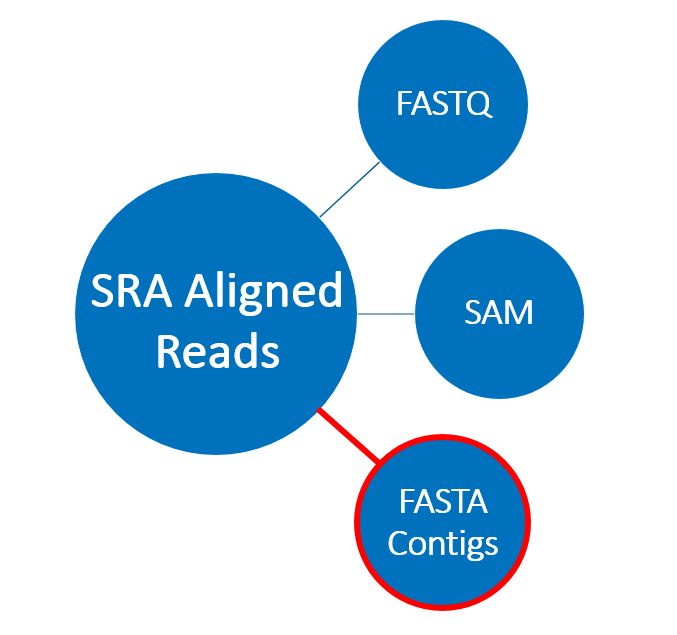
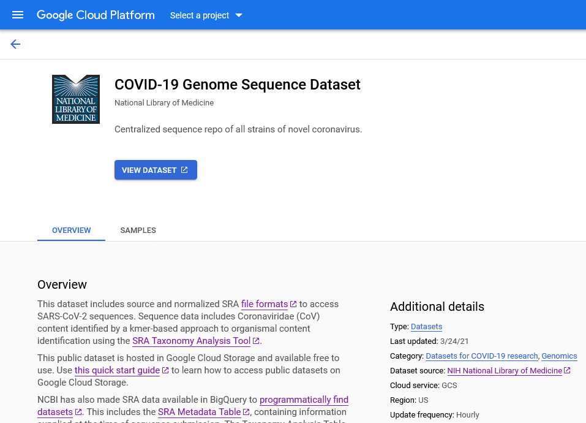
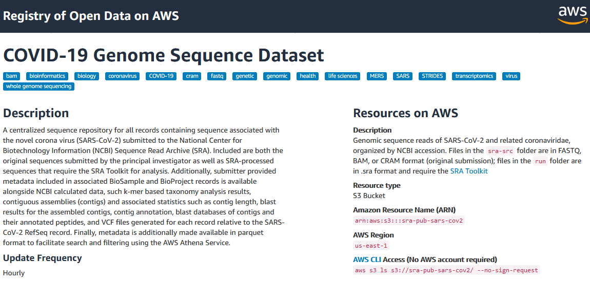

Introduction to SRA Aligned Read Format and Cloud Metadata for SARS-CoV-2
Contributors
 Jon Trow
Jon Trow
Questions
What is the SRA Aligned Read Format
How can I use it?
Objectives
Understand which data and metadata types are available for SARS-CoV-2 SRA runs in the cloud.
Understand what SRA Aligned Read Format is and what can you do with it.
Working knowledge of SRA Metadata available on the cloud, ways to access it, and some popular use cases.
last_modification Last modification: Jun 2, 2021
Why have SRA data in the cloud?
-
SRA data archive format is over 18PB (great!)
…but it’s a lot of data that is hard to search (not so great)
-
Do you wish:
- It was easier to find SRA data based on organismal content?
- Searching SRA based on submitted BioProject and BioSample information was simpler?
- You could get a sense of what could be assembled out of an SRA dataset before downloading?
- You didn’t need to do the assembly/variant calling yourself?
What data is in scope for this training?
- Public SRA data that contains SARS-CoV-2 sequence
- Illumina platform only
- Stay tuned for long-read data
- How do we determine which runs contain SARS-CoV-2 data?
- SRA Taxonomy Analysis Tool (STAT)
-
Preprint: doi:10.1101/2021.02.16.431451v1
Introduction to SRA aligned read format and associated metadata
- Incoming SRA runs are scanned for Coronaviridae content
- Contigs are created via guided assembly against SARS-CoV-2 RefSeq - fasta contigs
- Reads are mapped back to the contigs - aligned sam, fasta/q reads
- Taxonomy assessed
- STAT
- BLAST
- Variants are called then annotated with VIGOR3 - VCF
Using aligned read format
.pull-left[
- Coronaviridae contigs constructed from SRA data
- Compatible with SRA Toolkit
- Access to reads and contigs individually
- Ability to see which reads align to each contig
- Smaller size than standard SRA format- no quality scores ]
.pull-right[  ]
Accessing SRA metadata in the cloud
- Cloud query services- BigQuery and Athena
- Analyze SRA metadata directly using standard SQL, allowing searches that are not possible in Entrez
- No need to manually transform the data for querying, so you can be up and running in just a few minutes
- Built in support for complex data fields
- You pay for the data scanned, though some free options exist
- The underlying metadata files are available for download at no cost
- JSON format can be transformed according to your preferences
- These can be imported directly to Galaxy
Available SRA metadata
SRA aligned read metadata:
- User submitted metadata
- Biological sample and sequencing library metadata supplied at the time of sequence submission
- Contig metadata
- Contig stats including: coverage, taxonomy ID, contig length
- Taxonomic content analysis of contigs
- Search for records based on kmer hits to tax level of interest
- BLAST results for contigs
- Contig blast results including: hit accession, hit length, percent identity
- Variant calls
- Variation and VIGOR3 annotation information
- Peptides
- Details of annotated peptides, including sequence
Popular use cases- what can you do with it?
- Finding SARS-CoV-2 contigs with specific coverage and length
- Filter SARS-CoV-2 contigs based on geographic location of sample collection
- Find top SARS-CoV-2 BLAST hits for contigs from a specific geographic location
- Filter for all variations called from samples collected in the United States after 02/01/2021
- Filter for runs with the E484K mutation
SRA data in the cloud
.pull-left[
- COVID-focused SRA datasets available in GCP and AWS
- Searchable metadata
- SRA aligned read files
- VCF files
- Full SRA runs
- Original format submitted files
- Benefits
- Access large volume of COVID-19-related raw read data with no throttling, at no cost to you
- Can be imported into Galaxy for use in your existing workflows ]
.pull-right[ .image-100[] .image-100[] ]
Key Points
Thank you!
This material is the result of a collaborative work. Thanks to the Galaxy Training Network and all the contributors! This material is licensed under the Creative Commons Attribution 4.0 International License.
This material is licensed under the Creative Commons Attribution 4.0 International License.